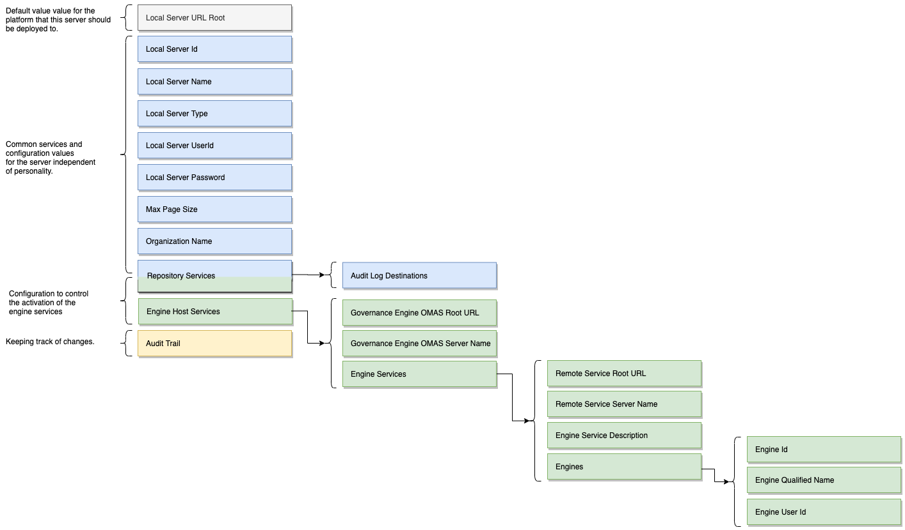
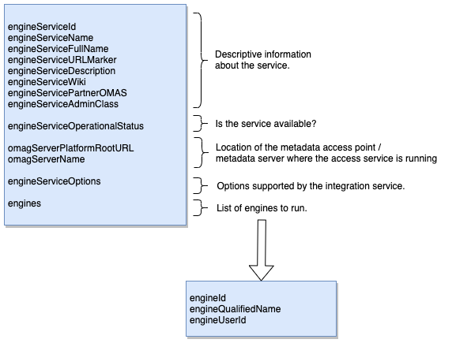

Configuring an engine host¶
Each type of OMAG Server is configured by creating a configuration document.

Example configuration of a minimal engine host server
Below is an example of the configuration for a minimal engine host server. It has
a single engine service (Asset Analysis OMES) and the default audit log.
Both the Governance Engine OMAS used by the engine host services and the Discovery Engine OMAS
used by the Asset Analysis OMES are running on the metadata server called myMetadataServer.
{
"class": "OMAGServerConfigResponse",
"relatedHTTPCode": 200,
"omagserverConfig": {
"class": "OMAGServerConfig",
"versionId": "V2.0",
"localServerId": "8b745d03-5ffc-4978-81ab-bd3d5156eebe",
"localServerName": "myserver",
"localServerType": "Open Metadata and Governance Server",
"localServerURL": "https://localhost:9443",
"localServerUserId": "OMAGServer",
"maxPageSize": 1000,
"engineHostServicesConfig": {
"omagserverPlatformRootURL": "https://localhost:9443",
"omagserverName": "myMetadataServer",
"engineServices": [
{
"class": "EngineServiceConfig",
"engineId": 6000,
"engineQualifiedName": "Asset Analysis",
"engineServiceFullName": "Asset Analysis OMES",
"engineServiceURLMarker": "asset-analysis",
"engineServiceDescription": "Analyses the content of an asset's real world counterpart, generates annotations in an open discovery report that is attached to the asset in the open metadata repositories .",
"engineServiceWiki": "https://egeria.odpi.org/open-metadata-implementation/engine-services/asset-analysis/",
"engines" : [ {"engineId" : "daff1dca-984b-4b8a-8a8f-febaf72b82a8",
"engineName" : "engine1",
"engineUserId" : "engine1UserId"},
{"engineId" : "a80aa0f8-2ea0-4f84-b613-d68becba2693",
"engineName" : "engine2",
"engineUserId" : "engine2UserId"} ],
"engineServiceOperationalStatus": "ENABLED",
"engineServiceAdminClass": "org.odpi.openmetadata.engineservices.assetanalysis.admin.AssetAnalysisAdmin",
"omagserverPlatformRootURL": "https://localhost:9443",
"omagserverName": "myMetadataServer"
}
]},
"repositoryServicesConfig": {
"class": "RepositoryServicesConfig",
"auditLogConnections": [
{
"class": "Connection",
"headerVersion": 0,
"displayName": "Console",
"connectorType": {
"class": "ConnectorType",
"headerVersion": 0,
"type": {
"class": "ElementType",
"headerVersion": 0,
"elementOrigin": "LOCAL_COHORT",
"elementVersion": 0,
"elementTypeId": "954421eb-33a6-462d-a8ca-b5709a1bd0d4",
"elementTypeName": "ConnectorType",
"elementTypeVersion": 1,
"elementTypeDescription": "A set of properties describing a type of connector."
},
"guid": "4afac741-3dcc-4c60-a4ca-a6dede994e3f",
"qualifiedName": "Console Audit Log Store Connector",
"displayName": "Console Audit Log Store Connector",
"description": "Connector supports logging of audit log messages to stdout.",
"connectorProviderClassName": "org.odpi.openmetadata.adapters.repositoryservices.auditlogstore.console.ConsoleAuditLogStoreProvider"
},
"configurationProperties": {
"supportedSeverities": [
"<Unknown>",
"Information",
"Event",
"Decision",
"Action",
"Error",
"Exception",
"Security",
"Startup",
"Shutdown",
"Asset",
"Types",
"Cohort"
]
}
}
]
},
"auditTrail": [
"Tue Dec 08 18:38:32 GMT 2020 me updated configuration for engine service asset-analysis.",
"Tue Dec 08 18:43:47 GMT 2020 me set up default audit log destinations."
]
}
}
Configure the basic properties¶
The basic properties of the OMAG Server are used in logging and events originating from the server. They help to document the purpose of the server (which helps with problem determination) and enable performance improvements by allowing the server to ignore activity or metadata that is not relevant to its operation.
The basic properties include two unique identifiers:
| Property | Description |
|---|---|
localServerId |
Unique identifier for this server. By default, this is initialized to a randomly generated Universal Unique identifier (UUID). |
localServerName |
Meaningful name for the server for use in messages and UIs. Ideally this value is unique to aid administrators in understanding the source of messages and events from the server. This value is set to the server name assigned when the configuration is created. |
The other basic properties have values that can be changed through the admin services API:
| Property | Description |
|---|---|
localServerType |
Descriptive type name for the server. Again this is useful information for the administrator to understand the role of the server. The default value is Open Metadata and Governance Server. |
organizationName |
Descriptive name for the organization that owns the local server/repository. This is useful when the open metadata repository cluster consists of metadata servers from different organizations, or different departments of an enterprise. The default value is null. |
localServerUserId |
UserId to use for server-initiated REST calls. The default is OMAGServer. |
localServerPassword |
Password to use for server-initiated REST calls. The default is null. This means that only the userId is sent in the HTTP header. |
maxPageSize |
The maximum page size that can be set on requests to the server. The default value is 1000. A value of zero means unlimited page size. Although supported, the zero value is not recommended because it provides no protection from a large request denial of service attack. |
The sections that follow cover how to set up these values.
Set server type name¶
The server type name should be set to something that describes the OMAG Server's role. It may be the name of a specific product that it is enabling, or a role in the metadata and governance landscape.
POST - set server type
{{platformURLRoot}}/open-metadata/admin-services/users/{{adminUserId}}/servers/{{serverName}}/server-type?typeName="{{serverTypeName}}"
Set organization name¶
The organization name may be the owning organization or department or team supported by the server.
POST - set organization name
{{platformURLRoot}}/open-metadata/admin-services/users/{{adminUserId}}/servers/{{serverName}}/organization-name?name="{{organizationName}}"
Set the server's user ID and optional password¶
The server's user ID is used when processing requests that do not have an end user, such as receiving an event from a topic. The default value is OMAGServer. Ideally each server should have its own user ID so it is possible to restrict the resources that each server has access to.
If the password is specified as well, the userId and password combination are used to provide authentication information on each REST call made by the server.
POST - set server's userId
{{platformURLRoot}}/open-metadata/admin-services/users/{{adminUserId}}/servers/{{serverName}}/server-user-id?id="{{serverUserId}}"
POST - set server's password
{{platformURLRoot}}/open-metadata/admin-services/users/{{adminUserId}}/servers/{{serverName}}/server-user-password?password="{{serverUserPassword}}"
Set the maximum page size for REST API requests¶
The maximum page size value sets an upper limit on the number of results that a caller can request on any paging REST API to this server. Setting maximum page size helps to prevent a denial of service attack that uses very large requests to overwhelm the server. A value of 0 means no limit, and leaves the server open to such attacks.
POST - set maximum page size
{{platformURLRoot}}/open-metadata/admin-services/users/{{adminUserId}}/servers/{{serverName}}/max-page-size?limit={{maxPageSize}}
Configure the audit log¶
Egeria's audit log provides a configurable set of destinations for audit records and other diagnostic logging for an OMAG Server. Some destinations also support a query interface to allow an administrator to understand how the server is running.
If the server is a development or test server, then the default audit log configuration is probably sufficient: the console audit log destination.
POST - set default audit log destination
{{platformURLRoot}}/open-metadata/admin-services/users/{{adminUserId}}/servers/{{serverName}}/audit-log-destinations/default
Using this option overrides all previous audit log destinations.
If this server is a production server then you will probably want to set up the audit log destinations explicitly. You can add multiple destinations and each one can be set up to process specific severities of log records. The audit log severities are as follows:
| Severity | Description |
|---|---|
Information |
The server is providing information about its normal operation. |
Event |
An event was received from another member of the open metadata repository cohort. |
Decision |
A decision has been made related to the interaction of the local metadata repository and the rest of the cohort. |
Action |
An Action is required by the administrator. At a minimum, the situation needs to be investigated and if necessary, corrective action taken. |
Error |
An error occurred, possibly caused by an incompatibility between the local metadata repository and one of the remote repositories. The local repository may restrict some of the metadata interchange functions as a result. |
Exception |
An unexpected exception occurred. This means that the server needs some administration attention to correct configuration or fix a logic error because it is not operating as a proper peer in the open metadata repository cohort. |
Security |
Unauthorized access to a service or metadata instance has been attempted. |
Startup |
A new component is starting up. |
Shutdown |
An existing component is shutting down. |
Asset |
An auditable action relating to an asset has been taken. |
Types |
Activity is occurring that relates to the open metadata types in use by this server. |
Cohort |
The server is exchanging registration information about an open metadata repository cohort that it is connecting to. |
Trace |
This is additional information on the operation of the server that may be of assistance in debugging a problem. It is not normally logged to any destination, but can be added when needed. |
PerfMon |
This log record contains performance monitoring timing information for specific types of processing. It is not normally logged to any destination, but can be added when needed. |
<Unknown> |
Uninitialized Severity |
The body of the request should be a list of severities
If an empty list is passed as the request body then all severities are supported by the destination.
Add audit log destinations¶
There are various destinations that can be configured for the audit log:
POST - add console audit log destination
This writes selected parts of each audit log record to stdout.
{{platformURLRoot}}/open-metadata/admin-services/users/{{adminUserId}}/servers/{{serverName}}/audit-log-destinations/console
POST - add slf4j audit log destination
This writes full log records to the slf4j ecosystem.
{{platformURLRoot}}/open-metadata/admin-services/users/{{adminUserId}}/servers/{{serverName}}/audit-log-destinations/slf4j
When configuring slf4j as destination you also need to specify auditlog logger category via the application properties. This is described in Connecting the OMAG Audit Log Framework section of the developer logging guide.
POST - add JSON file-based audit log destination
This writes JSON files in a shared directory.
{{platformURLRoot}}/open-metadata/admin-services/users/{{adminUserId}}/servers/{{serverName}}/audit-log-destinations/files
POST - add event-based audit log destination
This writes each log record as an event on the supplied event topic. It assumes that the event bus is set up first.
{{platformURLRoot}}/open-metadata/admin-services/users/{{adminUserId}}/servers/{{serverName}}/audit-log-destinations/event-topic
POST - add connection-based audit log destination
This sets up an audit log destination that is described though a connection. In this case, the connection is passed in the request body and the supported severities can be supplied in the connection's configuration properties.
{{platformURLRoot}}/open-metadata/admin-services/users/{{adminUserId}}/servers/{{serverName}}/audit-log-destinations/connection
POST - add a list of connection-based audit log destinations
It is also possible to set up the audit log destinations as a list of connections. Using this option overrides all previous audit log destinations.
{{platformURLRoot}}/open-metadata/admin-services/users/{{adminUserId}}/servers/{{serverName}}/audit-log-destinations
Remove audit logs¶
The following will remove all audit log destinations:
POST - clear all audit log destinations
Clears the list of audit log destinations from the configuration enabling you to add a new set of audit log destinations.
{{platformURLRoot}}/open-metadata/admin-services/users/{{adminUserId}}/servers/{{serverName}}/audit-log-destinations/none
Configure the server security connector¶
Metadata that is being aggregated from different sources is likely to need comprehensive access controls.
Egeria provides fine-grained security control for metadata access . It is implemented in a server security connector that is called whenever requests are made for to the server.
Security is configured for a specific OMAG Server by adding a connection for this connector to the server's configuration documentusing the following command.
POST - configure security connector
{{platformURLRoot}}/open-metadata/admin-services/users/{{adminUserId}}/servers/{{serverName}}/security/connection
This passes in a connection used to create the server security connector in the request body.
{
"class": "Connection",
"connectorType": {
"class": "ConnectorType",
"connectorProviderClassName": "{fullyQualifiedJavaClassName}"
}
}
Example: set up the sample server security connector
For example, this is the connection that would set up the sample server security connector provided for the Coco Pharmaceuticals case study:
{
"class": "Connection",
"connectorType": {
"class": "ConnectorType",
"connectorProviderClassName": "org.odpi.openmetadata.metadatasecurity.samples.OpenMetadataServerSecurityProvider"
}
}
Determine configured security¶
GET - query the server security connector setting
{{platformURLRoot}}/open-metadata/admin-services/users/{{adminUserId}}/servers/{{serverName}}/security/connection
Response indicating no security
{
"class": "ConnectionResponse",
"relatedHTTPCode": 200
}
Response indicating a specific security connector
If the response looks more like the JSON below, a connector is configured. The connectorProviderClassName tells you which connector is being used.
{
"class": "ConnectionResponse",
"relatedHTTPCode": 200,
"connection": {
"class": "Connection",
"connectorType": {
"class": "ConnectorType",
"connectorProviderClassName": "{fullyQualifiedJavaClassName}"
}
}
}
Remove configured security¶
DELETE - remove configured security connector
{{platformURLRoot}}/open-metadata/admin-services/users/{{adminUserId}}/servers/{{serverName}}/security/connection
This removes all authorization checking from the server.
Configure the engine host services¶
The engine host services provide the base implementation of the engine host OMAG Server.
There are two parts to configuring the engine host services:
Specify location of governance engine¶
The location of the metadata server (or metadata access point) running the Governance Engine OMAS, which will supply the definitions of the governance engines that will run in the engine services, is configured using two properties:
- the server url root of the metadata server's OMAG Server Platform, and
- the name of the metadata server.
POST - specify location of governance engine
{{platformURLRoot}}/open-metadata/admin-services/users/{{adminUserId}}/servers/{{engineHostServerName}}/engine-definitions/client-config
With a request body like the following:
{
"class": "OMAGServerClientConfig",
"omagserverPlatformRootURL": {{MDServerURLRoot}},
"omagserverName" : "{{MDServerName}}"
}
Configure the engines services¶
The engine services (or Open Metadata Engine Services (OMES) to give them their full name) also run in the engine host.
Each engine service provides support for a particular type of governance engine:
Each engine service hosts one or more governance engines. A governance engine is a collection of governance services of a specific type:
- Asset analysis hosts open discovery services that analyze the content of an asset's real world counterpart, generates annotations in an open discovery analysis report that is attached to the asset in the open metadata repositories.
- Governance action hosts governance action services that monitor changes in the metadata and initiate updates and other actions as a result.
List engine services¶
It is possible to get a description of each of the registered engine services using the following command:
GET - list engine services
{{platformURLRoot}}/open-metadata/platform-services/users/{{userId}}/server-platform/registered-services/engine-services
Note the engineServiceURLMarker for the engine service that you want to configure.
Configure engine service¶

The descriptive information and operational status are filled out automatically by the administration services based on the engineServiceURLMarker value that you supply. The other values are supplied on the configuration call.
Each engine service is configured with the network location of the metadata access point / metadata server running the appropriate OMAS. There are a set of options that the engine service supports along with the list of configuration properties for the governance engines that will be run in the engine service. The governance engine's configuration properties identify which governance engine to run. The governance engine's definition, including the services it supports are retrieved from the metadata access point / metadata server when the engine service starts up.
POST - configure engine service
{{platformURLRoot}}/open-metadata/admin-services/users/{{adminUserId}}/servers/{{serverName}}/engine-services/{{engineServiceURLMarker}}
With a request body like the following:
{
"class": "EngineServiceRequestBody",
"omagserverPlatformRootURL": {{MDServerURLRoot}},
"omagserverName" : "{{MDServerName}}",
[ {
"class": "EngineConfig",
"engineQualifiedName" : " ... "
"engineUserId" : " ... "
} ]
}
Where:
engineQualifiedName- set up the qualified name of the governance engine stored in the metadata servers.connectorUserId- set up the user id for the engine: if this is null, the engine host's userId is used on requests to the Open Metadata Access Service (OMAS).
Further Information¶
The definition of the governance services that are supported by these governance engines are retrieved from the open metadata server when the engine host server starts up.
Maintaining these definitions is described:
- For discovery engines and services see Discovery Engine OMAS
- For governance action engines and services see Governance Engine OMAS
Remove engine host services¶
The following command removes the configuration for the engine host services from an OMAG Server's configuration document. This may be used if the engine host services have been added in error.
DELETE - remove engine host services
{{platformURLRoot}}/open-metadata/admin-services/users/{{adminUserId}}/servers/{{engineHostServerName}}/engine-host-services